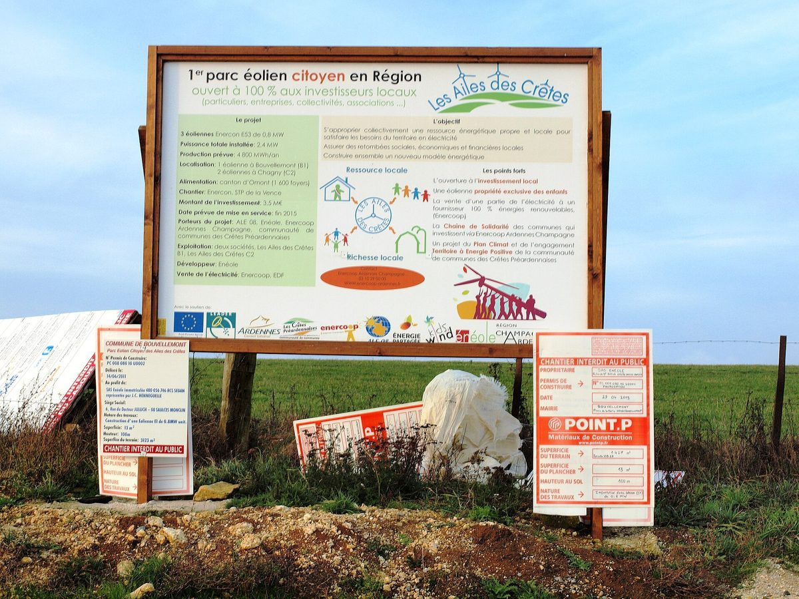

프랑스 그랑테스트 시민에너지 지원망 GECLER, 2028년까지 참여 시민 세 배 목표…시민 모임 58곳 돕고 29곳 발전소 가동

지역 단체 3곳이 2019년부터 상담·타당성 조사·법률·재무 지원, 지원 사업 설비 합계 19MW·연 23.5GWh…아르덴 시민 풍력·사베른 공공건물 지붕 태양광·보주 옛 수력 복원 등 조합원 2,000명 넘어
프랑스 북동부 그랑테스트 지역의 시민 재생에너지 지원망 GECLER(그랑테스트 시민·지역 재생에너지)가 지역 전역에 주민 참여를 호소하며 2028년까지 시민에너지 사업 참여자를 지금의 세 배로 늘리겠다는 목표를 내놓았다. 2019년 출범한 이 네트워크는 아르덴 지역에너지·기후기관(ALE 08)과 로렌 재생에너지(LER), 알테르 알자스 에네르지 등 단체 3곳이 함께 꾸리며, 프랑스 환경에너지관리청(ADEME)과 그랑테스트 지역정부의 클리막시옹(Climaxion) 제도, 유럽지역개발기금(FEDER)의 지원을 받아 시민 모임에 상담과 타당성 조사, 법률·재무 지원, 교육, 네트워크 연결을 제공한다. 지금 돕는 시민 모임은 58곳으로 이 가운데 29곳이 발전소를 돌리고 나머지는 개발 또는 초기 단계에 있으며, 지원 사업의 설비는 2025년 기준 합계 19MW, 연 발전량은 23.5GWh이고 그랑테스트의 조합원은 2,000명을 넘는다. 아르덴의 레 젤 데 크레트(Les Ailes des Crêtes)는 2016년 가동한 지역 첫 시민 풍력으로 ALE 08과 크레트 프레아르데네즈 기초지자체연합 등이 추진해 조합원 350명과 여러 코뮌이 참여했고, 풍력기 3기로 연 4,049MWh를 만들며 사업비는 390만 유로였다. 바랭의 시민 협동회사 상트랄 빌라주아즈 뒤 페이 드 사베른은 2017년부터 주주 306명이 공공건물 지붕에 태양광 603kWc를 올려 누적 1,700MWh 넘게 생산했고 2025년부터는 공동 자가소비 고리 2곳으로 그 전기를 지역에서 바로 쓰며, 보주의 협동조합 에르시솔(ERCISOL)은 2010년 금융위기 뒤 저축을 지역 재생에너지에 쓰자며 생겨 주주 195명이 140만 유로를 모아 19세기 말 모젤강에 지은 수력발전소(235kW)를 되살렸다. 네트워크 운영 책임자 콜린 르메냥은 "에너지는 전문가만의 것이 아니다"라고 말했고, 네트워크는 기술 지식이 없어도 의사결정과 출자, 시간과 재능 보태기로 참여할 수 있다며 회원층을 넓히고 젊은 세대 참여를 늘리겠다고 밝혔다.
시민에너지 관점
단체 3곳이 받쳐 주는 지원망 아래 시민 모임 58곳이 움직이고 그 절반인 29곳이 실제 발전소를 돌리고 있다는 것은, 시민에너지가 주민의 의지만으로가 아니라 타당성 조사와 법률·재무를 함께 짚어 주는 중간 조직이 있을 때 사업 단계까지 간다는 것을 보여 준다. 주민 모임이 풍력이나 수력 같은 큰 설비를 감당할 수 있겠느냐는 우려가 나올 수 있지만, 아르덴에서는 조합원 350명과 코뮌들이 390만 유로짜리 풍력 단지를 세웠고 보주에서는 주주 195명이 19세기 말에 지은 수력발전소를 되살렸다. 공공건물 지붕에 시민 협동회사가 발전소를 올리고 그 전기를 동네가 바로 쓰는 사베른처럼, 공공 자산과 주민 저축이 만나면 발전소의 이익과 결정권이 지역에 남는다. 국내에서도 마을 발전 협동조합이 저마다 맨손으로 시작하지 않도록 광역 단위의 시민에너지 지원 조직을 세우고 공공 기금으로 안정된 운영비를 붙여야 한다.
출처: JDS (jds.fr) 2026-10-28 Julie (JDS) 원문 보기
フランス・グラン・テスト地域の市民エネルギー支援ネットワークGECLER、2028年までに参加市民3倍を目標…市民グループ58団体を支援し29団体が発電所を稼働
地域の3団体が2019年から相談・事業化調査・法務・財務を支援、支援事業の設備は計19MW・年23.5GWh…アルデンヌの市民風力、サヴェルヌの公共建物屋根太陽光、ヴォージュの古い水力発電所の復元など組合員2,000人超
フランス北東部グラン・テスト地域の市民再生可能エネルギー支援ネットワークGECLER（グラン・テスト市民・地域再生可能エネルギー）が、地域全体に住民の参加を呼びかけ、2028年までに市民エネルギー事業の参加者を現在の3倍に増やす目標を打ち出した。2019年に発足したこのネットワークは、アルデンヌ地域エネルギー・気候機関（ALE 08）、ロレーヌ再生可能エネルギー（LER）、アルテール・アルザス・エネルジーの3団体が共同で運営し、フランス環境・エネルギー管理庁（ADEME）、グラン・テスト地域圏のクリマクシオン（Climaxion）制度、欧州地域開発基金（FEDER）の支援を受けて、市民グループに相談、事業化調査、法務・財務支援、研修、ネットワークづくりを提供している。現在支援している市民グループは58団体で、うち29団体が発電所を稼働させ、残りは開発中または初期段階にあり、支援事業の設備は2025年時点で計19MW、年間発電量は23.5GWh、グラン・テスト地域の組合員は2,000人を超える。アルデンヌのレ・ゼル・デ・クレト（Les Ailes des Crêtes）は2016年に稼働した地域初の市民風力で、ALE 08とクレト・プレアルデネーズ広域自治体連合などが推進し、組合員350人と複数のコミューンが参加、風車3基で年4,049MWhを発電し、事業費は390万ユーロだった。バ・ラン県の市民協同会社サントラル・ヴィラジョワーズ・デュ・ペイ・ド・サヴェルヌは2017年から株主306人が公共建物の屋根に太陽光603kWcを載せて累計1,700MWh超を発電し、2025年からは2つの共同自家消費ループでその電気を地域ですぐに使っており、ヴォージュ県の協同組合エルシソル（ERCISOL）は2010年の金融危機後に貯蓄を地域の再生可能エネルギーに生かそうと生まれ、株主195人が140万ユーロを集めて19世紀末にモーゼル川に建てられた水力発電所（235kW）をよみがえらせた。ネットワーク運営責任者のコリーヌ・ルメニャン氏は「エネルギーは専門家だけのものではない」と述べ、ネットワークは技術的な知識がなくても意思決定、出資、時間や能力の提供で参加できるとして、会員層を広げ若い世代の参加を増やすとしている。
市民エネルギーの視点
3団体が支える支援ネットワークの下で市民グループ58団体が動き、その半分の29団体が実際に発電所を稼働させているという事実は、市民エネルギーが住民の意志だけでなく、事業化調査や法務・財務を一緒に確認してくれる中間組織があってこそ事業段階に進むことを示している。住民グループが風力や水力のような大きな設備を担えるのかという懸念もありうるが、アルデンヌでは組合員350人とコミューンが390万ユーロの風力発電所を建て、ヴォージュでは株主195人が19世紀末に建てられた水力発電所をよみがえらせた。公共建物の屋根に市民協同会社が発電所を載せ、その電気を地域がすぐに使うサヴェルヌのように、公共の資産と住民の貯蓄が出会えば、発電所の利益と決定権は地域に残る。韓国でも村の発電協同組合がそれぞれ手探りで始めることのないよう、広域単位の市民エネルギー支援組織をつくり、公的基金で安定した運営費を付けるべきだ。
出典: JDS (jds.fr) 2026-10-28 Julie (JDS) 原文を読む
法国大东部大区公民能源支持网络GECLER，目标到2028年参与市民增至三倍…支持58个市民团体，29个电站已投运
当地3个协会自2019年起提供咨询、可行性研究、法律和财务支持，所支持项目装机合计19MW、年发电23.5GWh…阿登公民风电、萨韦尔讷公共建筑屋顶光伏、孚日旧水电站修复等，社员超过2,000人
法国东北部大东部大区的公民可再生能源支持网络GECLER（大东部公民与地方可再生能源）向全大区发出居民参与号召，提出到2028年把参与公民能源项目的人数增加到现在的三倍。该网络成立于2019年，由阿登地方能源与气候机构（ALE 08）、洛林可再生能源协会（LER）和阿尔萨斯替代能源协会（Alter Alsace Énergies）3个协会共同运营，在法国生态转型署（ADEME）、大东部大区Climaxion计划和欧洲区域发展基金（FEDER）的支持下，为市民团体提供咨询、可行性研究、法律和财务支持、培训以及网络对接。目前获得支持的市民团体有58个，其中29个电站已经投运，其余处于开发或起步阶段；截至2025年，所支持项目的装机合计19MW，年发电量23.5GWh，大东部大区的社员超过2,000人。阿登省的"Les Ailes des Crêtes"是2016年投运的大区首个公民风电场，由ALE 08和克雷特-普雷阿登市镇联合体等推动，350名社员和多个市镇参与，3台风机年发电4,049MWh，项目投资390万欧元。下莱茵省的公民合作公司"萨韦尔讷地区乡村电站"（Centrales Villageoises du Pays de Saverne）自2017年起由306名股东在公共建筑屋顶安装603kWc光伏，累计发电超过1,700MWh，2025年起通过两个集体自发自用回路让所发电力在本地直接使用；孚日省的合作社ERCISOL诞生于2010年金融危机之后，宗旨是把储蓄用于本地可再生能源，195名股东筹集140万欧元，修复了19世纪末建在摩泽尔河上的水电站（235kW）。网络运营负责人科琳·勒梅尼昂说："能源不只属于专家。"网络表示，即使没有技术知识，也可以通过参与决策、出资、贡献时间和技能等方式参与，今后将扩大会员构成、吸引更多年轻一代。
市民能源视角
在3个协会支撑的支持网络下，58个市民团体在行动，其中一半即29个已经让电站真正运转，这说明公民能源不能只靠居民的热情，有了协助把关可行性研究和法律、财务的中间组织，项目才能真正落地。也许有人担心居民团体难以承担风电、水电这样的大型设施，但在阿登，350名社员和多个市镇建起了390万欧元的风电场；在孚日，195名股东让19世纪末建成的水电站重获新生。就像萨韦尔讷由公民合作公司在公共建筑屋顶建电站、所发电力由本地直接使用一样，公共资产与居民储蓄相结合，电站的收益和决定权就会留在本地。韩国也应设立广域层面的公民能源支持机构，并以公共基金提供稳定的运营经费，让村庄发电合作社不必各自从零摸索起步。
来源: JDS (jds.fr) 2026-10-28 Julie (JDS) 查看原文
France's Grand Est citizen energy support network GECLER aims to triple participants by 2028, backing 58 citizen groups of which 29 already run power plants
Three regional associations have offered advice, feasibility studies and legal and financial support since 2019, with supported projects totalling 19MW and 23.5GWh a year; members top 2,000 across citizen wind in the Ardennes, public-roof solar in Saverne and a restored old hydro plant in the Vosges
GECLER (Grand Est Citoyen et Local d'Énergies Renouvelables), a network supporting citizen renewable energy in the Grand Est region of north-eastern France, has called on residents across the region to get involved, setting a goal of tripling the number of people taking part in citizen energy projects by 2028. Set up in 2019, the network is run jointly by three associations — the Ardennes Local Energy and Climate Agency (ALE 08), Lorraine Énergies Renouvelables (LER) and Alter Alsace Énergies — and, with backing from the French ecological transition agency ADEME, the Grand Est regional council's Climaxion scheme and the European Regional Development Fund (FEDER), offers citizen groups advice, feasibility studies, legal and financial support, training and networking. It currently supports 58 citizen groups, 29 of which are running power plants while the rest are in development or at an early stage; in 2025 the projects it supports had a combined capacity of 19MW and annual output of 23.5GWh, and the region counts more than 2,000 members. Les Ailes des Crêtes in the Ardennes, the region's first citizen wind farm, began operating in 2016 after being developed by ALE 08, the Crêtes Préardennaises community of communes and others, with 350 members and several communes taking part; its three turbines produce 4,049MWh a year and the project cost €3.9 million. In the Bas-Rhin, the citizen co-operative company Centrales Villageoises du Pays de Saverne has since 2017 brought together 306 shareholders to install 603kWp of solar on public building roofs, producing more than 1,700MWh to date, and since 2025 has run two collective self-consumption loops so the power is used locally, while in the Vosges the co-operative ERCISOL, founded after the 2010 financial crisis to put savings into local renewables, raised €1.4 million from 195 shareholders to restore a 235kW hydro plant built on the Moselle in the late 19th century. "Energy is not reserved for specialists," said Coline Lemaignan, who coordinates the network, which says people can take part without technical knowledge — through decision-making, investment, or giving time and skills — and plans to broaden its membership and bring in more young people.
Citizen Energy View
That 58 citizen groups are active under a network backed by three associations, and that half of them — 29 — are already running power plants, shows that citizen energy reaches the project stage not on residents' goodwill alone but when an intermediary organisation helps them work through feasibility studies, legal questions and finance. Some may doubt that residents' groups can handle large installations such as wind or hydro, yet in the Ardennes 350 members and their communes built a €3.9 million wind farm, and in the Vosges 195 shareholders brought a late-19th-century hydro plant back to life. As in Saverne, where a citizen co-operative puts solar on public roofs and the neighbourhood uses the power directly, when public assets meet residents' savings, both the profits and the decisions stay in the community. Korea, too, should set up regional citizen energy support bodies and give them stable operating funds from public sources, so that village energy co-operatives do not each have to start from scratch.
Source: JDS (jds.fr) 2026-10-28 Julie (JDS) Read the original